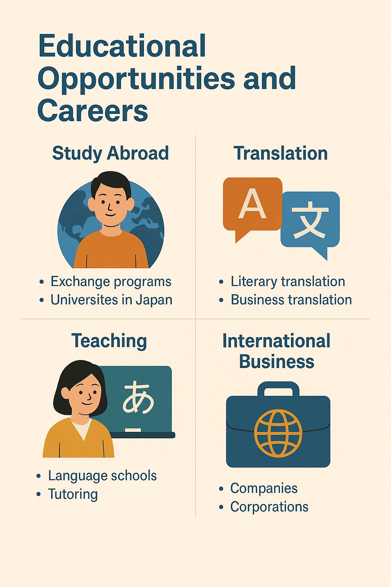

บทสนทนาพื้นฐาน เช่น การทักทาย แนะนำตัว และถามคำถาม
• こんにちは (Konnichiwa) — สวัสดี
• 私の名前は〜です (わたしのなまえは〜です) — ฉันชื่อ...
• お元気ですか？ (おげんきですか？) — สบายดีไหม?
วัฒนธรรมที่ควรรู้• การใช้คำพูดสุภาพ เช่น ございます, です, ます
• การแสดงความเคารพ เช่น การโค้งคำนับ
• การไม่พูดแทรก และฟังอย่างตั้งใจ
• ความสำคัญของการไม่เผลอใช้คำพูดตรงเกินไป
เทคนิคฝึกพูด• ฟังเสียงเจ้าของภาษา ผ่านหนัง, เพลง, พอดแคสต์
• ฝึกพูดตามประโยคง่าย ๆ ซ้ำ ๆ
• หาเพื่อนฝึกพูด หรือเข้ากลุ่มเรียนภาษาญี่ปุ่น
• ใช้แอปช่วยฝึกพูด เช่น Duolingo, Lingodeer หรือ HelloTalk
